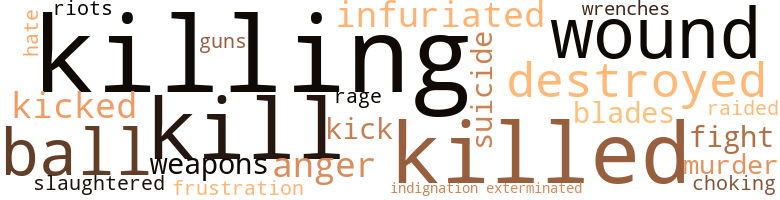

42 music-related terms matched in this text.
Most frequent terms in this topic: section (9); song (5); trumpet (5); phrases (3); instrument (3)

chorus.n.01
Definition: any utterance produced simultaneously by a group
| word |
sentence |
| chorus |
But almost everything , at least in the chorus , made some sort of sense now . |
cornet.n.01
Definition: a brass musical instrument with a brilliant tone; has a narrow tube and a flared bell and is played by means of valves
| word |
sentence |
| trumpet |
Something that sounded for all the world like a trumpet rang through the speaker . |
| trumpet |
The note of the trumpet signifies the call that came to our ancestors ... " " I 'll kill you , " I said . |
| trumpet |
" Well what was it ? " asked the third lawyer , the one with the trumpet . |
| trumpet |
" I 'm going to get Judge Cartrite , " I heard one say , and tootle his trumpet . |
| trumpet |
Three men stood on the City wall , One was short and two were tall , One had a golden trumpet clear That he shouted through so all would hear That one had come to the City , Over sand ... etc . |
dance.n.01
Definition: an artistic form of nonverbal communication
| word |
sentence |
| dance |
The other three , he reasoned , must be in eclipse and , even as he watched , the pattern of their movement - like a stately , ritualistic dance - became evident . |
epilogue.n.02
Definition: a short passage added at the end of a literary work
| word |
sentence |
| epilogue |
After fifteen minutes , she paused ; then , in a staccato epilogue , in which Joneny could hear the lack of conviction , Dr. Lang declared : " And due to the extremity of our situation , I believe all this taken together is deviation enough to recommend reconversion in the Death 's Head . " |
foreword.n.01
Definition: a short introductory essay preceding the text of a book
| word |
sentence |
| preface |
And , In order to make his task as easy as possible , he decided to preface his jaunt with a couple of hours more in the library . |
music.n.01
Definition: an artistic form of auditory communication incorporating instrumental or vocal tones in a structured and continuous manner
| word |
sentence |
| music |
The recorder instantaneously transmitted a printed copy of the words , lead sheets of the music and , of course , made a permanent recording . |
| music |
How he yearned for the city of Nukton on Creton III , for its silvered halls , its black-stone parks - the relics of that tragic race which produced amazing architecture and music , the more amazing since it had never developed any form of speech or other means of immediate communication . |
| music |
( See Appendix for music . ) |
musical_instrument.n.01
Definition: any of various devices or contrivances that can be used to produce musical tones or sounds
| word |
sentence |
| instruments |
Would you have come all the way out here just to tell us something our instruments show as well as yours ? " |
| instrument |
It can also be used as an instrument for capital punishment in those extreme cases which can not otherwise be dealt with in such a limited community . " |
| instrument |
Round-shouldered , with nubby , nailless fingers , they paused and groped mechanically at instrument dials and nobs , raising and lowering the rods in and out of the pool below them . |
| instrument |
The other one staggered away , regained his balance , and went off toward an instrument board . |
phrase.n.02
Definition: a short musical passage
| word |
sentence |
| phrases |
The only changes I have made are where an obvious mis-positioning of words or phrases occurred . |
| phrases |
So they keep giving Earth names and Earth phrases to things that belong out here . |
| phrases |
His phrases were measured , with long pauses between . |
pipe.n.04
Definition: a tubular wind instrument
| word |
sentence |
| pipe |
I called Meeker and got him to pipe up the playback on both sound and video . |
refrain.n.01
Definition: the part of a song where a soloist is joined by a group of singers
| word |
sentence |
| refrain |
Note the irregular repetition of the refrain , an original feature of many of the Star Folk ballads , as well as the slightly elliptical syntax . " |
section.n.01
Definition: a self-contained part of a larger composition (written or musical)
| word |
sentence |
| section |
To close off twenty people in a section and gas them for their love of history ; to chase a man out of hiding with a herd of specially bred twenty pound rats because he knows multiple calculus ; to inject a woman with half-a-dozen pathological viruses until she confesses Goedle 's Law and then sentence her to the Death 's Head as an unredeemable mutant ; what Norm does this conform to ? |
| section |
Its pointedly obvious that this section of the ship was not intended to be lived in ; certain repairs for the rest of the ship must be made here , but the hidden Ways and mechanical caverns , niches and paths of the center , are never used by people of the City . |
| section |
One section of the glittering rack was dark where the tubes had been wrapped in lead . |
| section |
" There is a great , irregular section of the hull ripped away and the skeletal interior glints under the light of Leffer with a strange iridescence . |
| section |
" I have n't been well recently and I 've been keeping to the free fall section . " |
| section |
When we reached the free fall section , she got a hell of a lot more relaxed . |
| section |
That 's what the kids say now when somebody 's been in free fall too long and they come into a gravity section . |
| section |
It maintains the spin of that whole section of the ship . " |
| section |
A section of corridor was split below him like a length of rubber tubing . |
singing.n.01
Definition: the act of singing vocal music
| word |
sentence |
| singing |
He turned to listen to the hoy singing to an odd , bare melody : " Another man stood on Deaths ' Head hill , His eyes were masked , his hands were still . |
song.n.01
Definition: a short musical composition with words
| word |
sentence |
| songs |
He could reconstruct it easily : Nella , somewhere in the vicinity of Leffer , suddenly getting the idea of sending his recorder in to see what he could pick up from the star-ships ( probably did it while making some repairs or stuck in quarantine ) ; leaving the machine on for six or seven hours , and then turning up with what appeared to be a scholarly collection of inaccessible folk songs . |
| song |
There was a pleasant sort of simplicity about the song , he realized as he reread it slowly and carefully ; too bad it was n't about anything . |
| song |
" About a song , " Joneny said . |
| song |
" A song about Beta-2 " " Which song ? " the boy asked . |
| song |
" A song about Beta-2 " " Which song ? " the boy asked . |
| songs |
" There 's more songs about that City than all the rest put together . " |
| song |
" Just like it says in the song , I guess . " |
tune.n.01
Definition: a succession of notes forming a distinctive sequence
| word |
sentence |
| melody |
He turned to listen to the hoy singing to an odd , bare melody : " Another man stood on Deaths ' Head hill , His eyes were masked , his hands were still . |
| lines |
Joneny remembered his interpretation of the lines : Under her arms a green-eyed child . |
| lines |
" Parks ' new assistant overheard .... " After a few more lines , the entries stopped . |
whistle.v.01
Definition: make whistling sounds
| word |
sentence |
| whistle |
I heard his breath whistle through the speaker . |
36 violence-related terms matched in this text.
Most frequent terms in this topic: killing (5); kill (3); killed (3); wound (2); ball (2)

anger.n.01
Definition: a strong emotion; a feeling that is oriented toward some real or supposed grievance
| word |
sentence |
| anger |
Joneny sat back feeling a conscientious research - er 's anger . |
butcher.v.01
Definition: kill (animals) usually for food consumption
| word |
sentence |
| slaughtered |
" That the One-Eyed sector of Epsilon-7 tried to take over their City , slaughtered the population , and blew up the ship . " |
destroy.v.04
Definition: put (an animal) to death
| word |
sentence |
| destroyed |
How long ago was it that One Eyed conspirators took over Epsilon-7 and destroyed it ? " |
exterminate.v.01
Definition: kill en masse; kill on a large scale; kill many
| word |
sentence |
| exterminated |
But to you that makes me a One-Eyed monster who 's got to be exterminated before he thinks in the wrong direction and corrupts somebody . " |
fight.v.02
Definition: fight against or resist strongly
| word |
sentence |
| fight |
There will be a bright new world hanging in the night before us , with natural forces to fight and food to be searched for , tracked , and hunted ; not handed to us on a conveyor belt from the hydroponics garden . |
frustration.n.03
Definition: a feeling of annoyance at being hindered or criticized
| word |
sentence |
| frustration |
The radio was n't a two-way , but in the frustration , I guess I must have forgotten it . |
fury.n.01
Definition: a feeling of intense anger
| word |
sentence |
| rage |
Must I cry , rage ; the City of Delta - j 6 is destroyed . |
gag.v.06
Definition: cause to retch or choke
| word |
sentence |
| choking |
" Captain Lee , Captain Lee - " and then he got caught on something that sounded like choking . |
gun.n.01
Definition: a weapon that discharges a missile at high velocity (especially from a metal tube or barrel)
| word |
sentence |
| guns |
Those stun guns are still pretty powerful . " |
hate.n.01
Definition: the emotion of intense dislike; a feeling of dislike so strong that it demands action
| word |
sentence |
| hate |
When she said that , he glanced at me with hate and said , " Trusted to kill you ? " |
indignation.n.01
Definition: a feeling of righteous anger
| word |
sentence |
| Indignation |
I would like to request that this trial not take place ... " ( in the pause a murmur began among the people ) " . . . and that One-Eyed Jack , in fact all the One-Eyes remaining in Sigma-A-9 , be placed in the custody of the City 's navigation staff , With myself fully and finally responsible for their conduct - " The murmur broke out into expletives of Indignation . |
infuriate.v.01
Definition: make furious
| word |
sentence |
| infuriated |
Such slipshod investigation infuriated Joneny , and he was sure that there was a lot of it in the inexhaustable archives of the Galactic Anthropology Library . |
kick_back.v.02
Definition: spring back, as from a forceful thrust
| word |
sentence |
| kicked |
He collapsed the bubble around him and kicked it into the comer like a pile of cellophane . |
| Kick |
Timme looped the rope a couple of times around his wrist - which always struck me as a trifle insecure , and said , " Kick free ! " |
kill.v.10
Definition: cause the death of, without intention
| word |
sentence |
| killing |
" It will if I can find out what 's killing off the rest of them . " |
| killing |
" You 're killing us , " I cried . |
| killing |
" But you 're not killing me , " I said . |
| kill |
The note of the trumpet signifies the call that came to our ancestors ... " " I 'll kill you , " I said . |
| kill |
But some time or other , this place was blasted by enough hard gamma to upset everything and kill off half the stores here . |
| killing |
" The rituals have gotten out of hand , and people have raided the web and are killing the One-Eyes . |
| kill |
When she said that , he glanced at me with hate and said , " Trusted to kill you ? " |
| killed |
" After one of the raids on the web , when Ralf was killed , Merril came to us in the Market . |
| killing |
" I 'm afraid my feet are killing me . " |
| killed |
" They almost killed the last visitors they had . |
| killed |
But they got killed finally , by the others , the ones you saw . " |
murder.n.01
Definition: unlawful premeditated killing of a human being by a human being
| word |
sentence |
| murder |
It is completely jammed with skeletons , as though the population had been seized with a sudden suicide craze or else some unbelievable mass murder had been committed . |
musket_ball.n.01
Definition: a solid projectile that is shot by a musket
| word |
sentence |
| ball |
Oh , a couple of times when we 've argued you 've told me that we all have our rituals , from my duties as Captain to some poor creature who pushes a small steel ball up a metal ramp with his nose in honor of the Journey to the Stars , to your studies in Ancient Earth Political Sciences . |
| ball |
Something known as Keefen 's Effect makes it look like a rubber ball dipped in glue , then rolled in particolored glitter . |
raid.v.01
Definition: search without warning, make a sudden surprise attack on
| word |
sentence |
| raided |
" The rituals have gotten out of hand , and people have raided the web and are killing the One-Eyes . |
riot.n.01
Definition: a public act of violence by an unruly mob
| word |
sentence |
| riots |
" The riots are growing , they are threatening to come even here . " |
suicide.n.01
Definition: the act of killing yourself
| word |
sentence |
| suicide |
It is completely jammed with skeletons , as though the population had been seized with a sudden suicide craze or else some unbelievable mass murder had been committed . |
sword.n.01
Definition: a cutting or thrusting weapon that has a long metal blade and a hilt with a hand guard
| word |
sentence |
| blades |
His arm had been squeezed between two grill blades and chewed off by the fan above his elbow . |
weapon.n.01
Definition: any instrument or instrumentality used in fighting or hunting
| word |
sentence |
| weapons |
The sleeping creatures , slumped over their weapons on the floor of the inner locks , are hairless , naked , paleskinned and fragile . |
wound.n.01
Definition: an injury to living tissue (especially an injury involving a cut or break in the skin)
| word |
sentence |
| wound |
They made their way from the Death 's Head , i along the blue corridor , through the courthouse , and out into the hollow wound of the star-ship in which Joneny 's cruiser hung against the girders . |
| wound |
A spiral bar wound through the middle . |
wrench.n.01
Definition: a sharp strain on muscles or ligaments
| word |
sentence |
| wrenches |
He switched on the iridium cell computer and let it record the twists and wrenches in the metal . |
9 religion-related terms matched in this text.
Most frequent terms in this topic: God (5); Jesus (1); temples (1); Christ (1); imitation (1)
god.n.03
Definition: a man of such superior qualities that he seems like a deity to other people
| word |
sentence |
| God |
" Thank God . |
| God |
God damn it , you come here and get us out ! |
| God |
For God 's sake , come over here and get us out of this - " Over Pike 's voice came a scream ; then Pike cried out . |
| God |
When I punched the switch , I heard Lee 's voice : " Oh for God 's sake , Hank , what are we going to do ? |
| God |
" For God 's sake , I 've got arms , legs , hands , feet . |
imitation.n.01
Definition: the doctrine that representations of nature or human behavior should be accurate imitations
| word |
sentence |
| imitation |
" I know that , " Joneny said , mustering an imitation of patience . |
jesus.n.01
Definition: a teacher and prophet born in Bethlehem and active in Nazareth; his life and sermons form the basis for Christianity (circa 4 BC - AD 29)
| word |
sentence |
| Jesus |
" Jesus Christ , Hank , sand count one-hundred-thirty-eight , one-forty-nine . |
messiah.n.01
Definition: any expected deliverer
| word |
sentence |
| Christ |
" Jesus Christ , Hank , sand count one-hundred-thirty-eight , one-forty-nine . |
temple.n.03
Definition: an edifice devoted to special or exalted purposes
| word |
sentence |
| temples |
Joneny would have put his age at fourteen or fifteen except that his hair , fine and pale and long , had receded at the temples like an old man 's , throwing off the whole character of his face . |